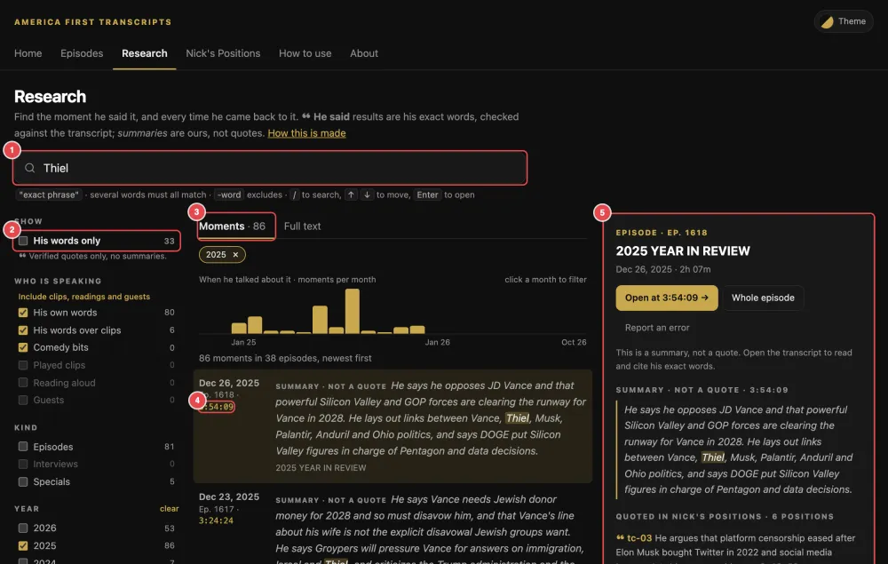
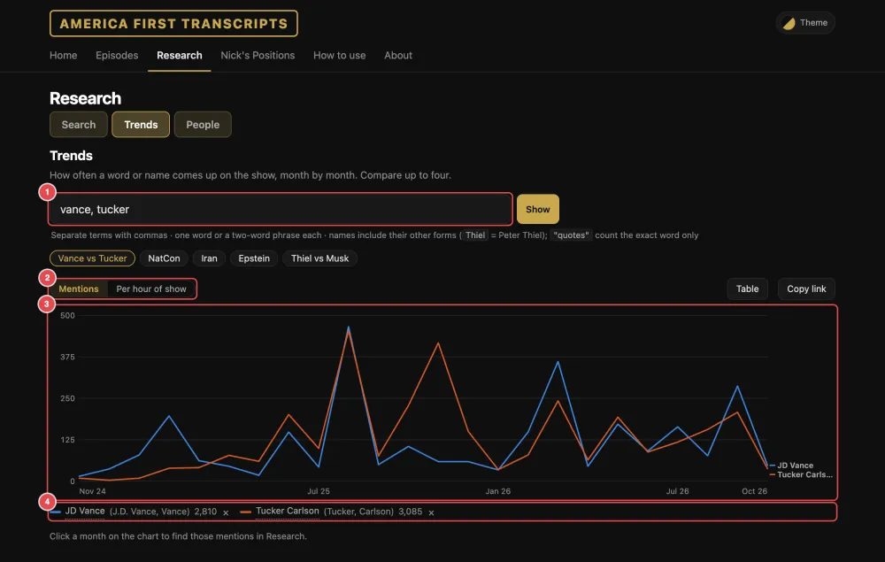
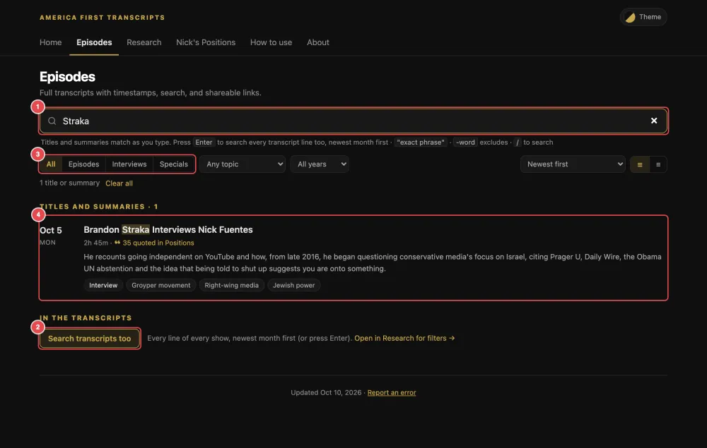
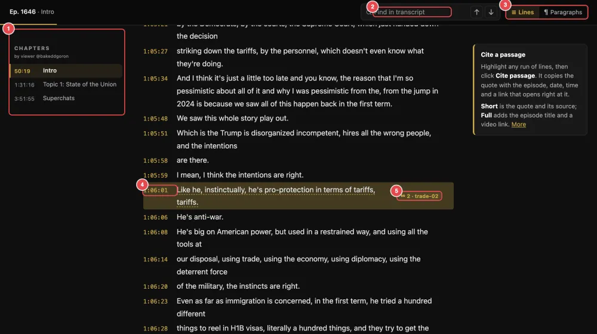
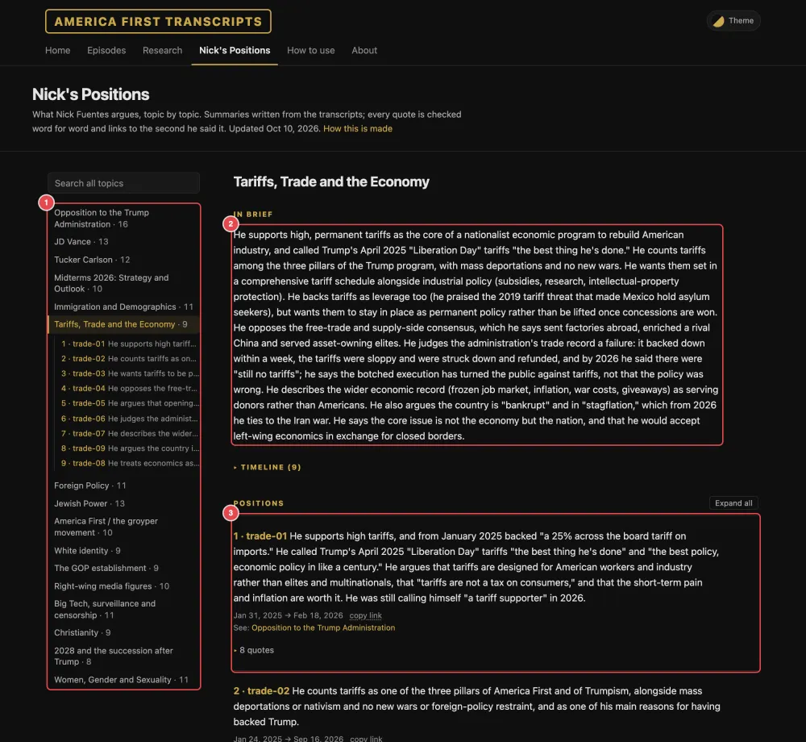
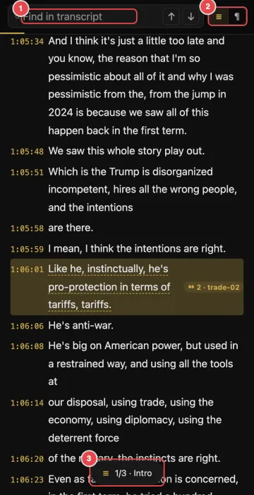

How to use this site
Searchable transcripts of the show America First, hosted by Nick Fuentes: one page per episode, every line linked to the video. About explains where the text comes from.
Start here: what most people want
The transcripts are automatic captions, so words and names can be wrong. Before you quote a line, click its time and listen.
1.Find what he said about something
Use Research. It searches every show at once.
- On the Search tab, type a name or phrase, like Thiel. All mentions lists every line where it was said, in every show, newest first.
- To narrow it down to the parts of shows that are about it, switch to Main discussions. Summary · not a quote results, in italics, describe part of a show; ❝ He said results are his exact words, checked against the transcript. Tick His words only to see just those.
- Click a result to preview it. Click its time, or Open at …, to read the episode from that line.

Narrow it down with the filters on the left (on a phone, the Filters button): kind of show, year, topic and theme. Click a bar in the month chart for just that month. With an empty search box, Main discussions lets the filters browse every show by topic.
Clips, readings and guests are hidden by default, so nobody else's words are taken for his. Under Who is speaking, Include clips, readings and guests shows them.
All mentions searches every month automatically. The first search downloads the whole archive, so it's faster on a computer; later searches reuse it. The switch stays where you put it while you search again.
| Type this | To get |
|---|---|
| Tucker Fuentes | Both words, in any order. |
| "mass deportations" | Those words together, in that order. |
| Vance -Usha | Vance, but not Usha. |
The web address keeps your search and filters, so you can bookmark or send the exact view.
Over time, or one person: Research's Trends tab charts how often a word or name comes up each month; compare up to four, and click a month for those lines. People gathers everything on one person: mentions, main discussions and the related positions. Searching a name in Research links to its page.

2.Find an episode
- The newest, or browsing: Episodes lists every show, newest first. Click a row to open it. The menus pick a topic, a year or a kind of show; the sort menu can put the shows most quoted in Nick's Positions first.
- By title or subject: type in the Episodes search box. Titles and summaries match as you type. To search what was said, press Enter or click Search transcripts too.
- By date: use the Archive calendar at the bottom of Home. Pick the year, then a highlighted day.
- By week: This week on Home, or Browse by week on Episodes, shows a week's episodes with their summaries and chapters, the topics that came up most, and the lines quoted in Nick's Positions. Step back and forward a week at a time.
New episodes in a feed reader: the RSS link at the bottom of every page.

3.Read an episode

- Chapters: the list on the left (on a phone, the ☰ Chapters button) jumps to each part. Most are by a viewer, @bakeddgoron, and are credited; the rest are labeled as auto chapters.
- Watch a moment: click the time next to any line. The video opens on Rumble at that second.
- Find a word: type in Find in transcript (or press /). Enter and Shift+Enter step through the matches.
- Paragraphs: the Lines / Paragraphs switch (≡ / ¶ on a phone) joins the lines into paragraphs. The site remembers your choice.
- ❝ marks: a line with a ❝ 2 · trade-02 tag and a dashed underline is quoted in Nick's Positions. Click the tag to see where.
- Corrected names: a name with a faint dotted underline was misspelled in the captions. Point at it, or tap it, to see what the caption said.
- Clips and guests: a note such as Played clip, not his words · per the index marks parts that aren't his words.
- At the bottom: the lines quoted in Nick's Positions, the previous and next episodes, and related ones.
5.Read Nick's Positions
A summary of what he argues on 16 topics, each point backed by his own words. It sets out his views without commentary and covers the main show, not the paid questions read at the end.
- Pick a topic from the list on the left (on a narrow screen, the buttons at the top).
- In brief gives the short version. Each numbered position is one argument.
- Some positions also have key passages: longer stretches where he makes the whole argument. Read all opens one.
- Click ▸ quotes under a position, or Expand all, to see his words. Each time opens the episode at that second.
- Search all topics searches every topic. copy link shares one position; cite copies one quote.

6.Phones, colors and shortcuts
On a phone everything works. Research's filters sit behind the Filters button, an episode's chapters behind ☰, and tapping a line opens its buttons.

Colors: the round Theme button at the top right has 10 color sets, six dark and four light. Your pick is remembered on this device.
Keyboard shortcuts
| / | Jump to the search box (on an episode, the find box). |
| ↓ ↑ · Enter | Research: move through the results · open one. |
| Enter · Shift+Enter | Episode find box: next · previous match. |
| Esc | Close a menu, the preview, the filters, the chapters or a line's buttons. |
Where does this come from? About explains where the transcripts, chapters and summaries come from, how quotes are checked, and how to cite the site.